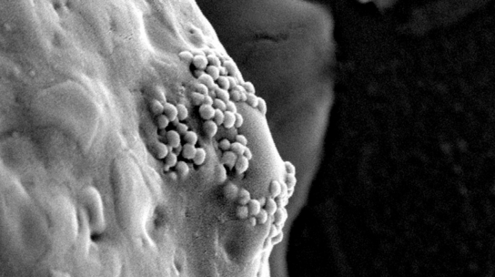
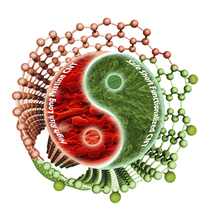

For a few decades, scientists have been learning how to design molecules that can operate in the human body. We’re talking about tiny particles that can manipulate biological processes—designed to bind to and thus block the enzyme essential for HIV replication, to help destroy tumors but not healthy cells, to weld together arteries after surgery.
On this small a level, also known as the nanoscopic scale or nanoscale , chemists are building and manipulating matter as small as atoms, small molecules, proteins, antibodies, and DNA bases that are less than 100 nanometers wide. These objects are much smaller than the cells in your body. Many are even tinier than the whisper-thin membrane that holds a human cell together.
Nanoparticles’ size makes them particularly useful against foes such as cancer. Unlike normal blood vessels that branch smoothly and flow in the same direction, blood vessels in tumors are a disorderly mess. And just as grime builds up in bad plumbing, nanoparticles, it seems, can be designed to build up in these problem growths.
 This quirk of tumors has led to a bewildering number of nanotech-related schemes to kill cancer. The classic approach involves stapling drugs to nanoparticles that ensure delivery to tumors but not to healthy parts of the body. A wilder method involves things like using a special kind of nanoparticle that absorbs infrared light. Shine a laser through the skin on the build-up, and the particles will heat up to fry the tumor from the inside out.
Using lasers to cook tumors sounds like a great reason to throw chemotherapy out the window, except that it’s nearly impossible to foresee all of the possible pitfalls of unleashing particles so small. There are countless different substances in each human cell, and it’s very hard to check how a molecule would interact with every one of them. Chemists are good at predicting narrower outcomes, such as how a particular molecule will work on its intended target, but they have had to resort to rough approximation to try to predict all of the possible interactions new nanoscale creations would have throughout the body. For instance, one particle turned out to be remarkably sticky. A whole blob of proteins stuck all over the particle like hair on a ball of tape, keeping it from even reaching its target.
here have been a number of success stories in which scientists were able design and release new molecules with confidence, as with the HIV drug Viracept. But the difficulty of computing the myriad of possible interactions has been the major limiting factor stalling widespread use. It’s not all sunshine and cancer cures. Nanoparticles have real risks.
Take nanotubes, tiny superstrong cylinders. Remember using lasers to cook tumors? That involves nanotubes. Researchers also want to use nanotubes to regrow broken bones and connect brains with computers. Although they hold a lot of promise, certain kinds of long carbon nanotubes are the same size and shape as asbestos. Both are fibers thin enough to pierce deep inside the lungs but too long for the immune system to engulf and destroy. Mouse experiments have already suggested that inhaling these nanotubes causes the same harmful effects (such as a particularly deadly form of cancer) as the toxic mineral once widely used in building insulation.
 Shorter nanotubes, however, don’t seem to be dangerous. Nanoparticles can be built in all sorts of different ways, and it’s difficult to predict which ones will go bad. Imagine if houses with three bathrooms gave everyone in them lung disease, while houses with two or four bathrooms were safe. It gets to the central difficulty of these nanoscale creations—the unforeseen dangers that could be the difference between biomiracle and bioterror.
In earlier days, scanners could only recognize letters of specific fonts. Today, after feeding computers tens of thousands of examples of handwritten digits to detect and extrapolate patterns from, ATMs are now reading handwriting on checks. In nanotechnology, the research is similar: Just like many slightly different shapes can mean the same letter, many slightly different molecules can mean the same effect. Setting up a computer to learn how different nanoparticles might interact with the complex human body can assist with what were previously impossibly complex computations to predict billions of possible outcomes.
“[F]or this to be a useful thing to do it doesn’t have to be perfect,” Rob Nishihara, a University of California, Berkeley, machine learning Ph.D. student and Facebook veteran (and a friend of mine), told me over email. “[E]ven a coarse estimate could really help narrow down the search space and propose candidate molecules.”
Here’s how it works. You put different kinds of nanoparticles in with cells and run dozens of experiments changing up variables such as particle lengths, materials, electrical properties, and so on. This gives you a training set.
Then you let your machine-learning algorithm loose to learn from the training set. After a few minutes of computation, it builds a model of what mattered. From there comes the nerve-wracking part; you give the machine a test set—data similar to but separate from your training set—and see how it does.
A good example is an experiment carried out by the University of California, Los Angeles’ Rong Liu and his colleagues, published in 2011. This research team studied metal oxide nanoparticles—think tiny spheres of rust. These particles are potentially useful for MRI scans; they can provide contrast, giving doctors a clearer view of what’s going on inside the body. This makes it easier to diagnose disease or damage. The researchers put different varieties of these particles in petri dishes with cells taken from human throat lining. The team observed which particles damaged the cells’ membranes, and then divided that data into a training set and a test set. Their best model correctly predicted which particles would damage cells in the test set. In fact, it predicted which particles would do damage with 100 percent accuracy.
One hundred percent accuracy sounds like a great accomplishment. But machine learning experts get skeptical when they see performance that high. The problem is that machine-learning algorithms sometimes do well on the training set but then fail when applied to the new inputs of their first test. Or, even worse, they do well on the first tests for the wrong reasons.
One famous example of this happened a few years ago when Google Flu Trends made waves for accurately “nowcasting” how many people had the flu. The initiative based its estimates on the patterns its algorithms had found in how search trends lined up with Centers for Disease Control and Prevention data on flu prevalence during a particular window of time. Although its real-time flu forecasts seemed to square with the numbers of CDC-tracked cases released with a two-week delay, its potentially life-saving predictive success didn’t last long. In fact, in subsequent years it failed rather dramatically.
It turned out that the algorithm was simply recognizing terms that people search a lot in winter, like “high school basketball.” It was just a coincidence that the number of people searching about basketball and the number of people getting the flu matched up so well the first year, and unsurprisingly it didn’t work in the long term. A human would never make that mistake.
It’s not to say that big data can’t be valuable, and advances in machine learning will absolutely lead to huge breakthroughs for nanomedicine. But it is reason to not turn the algorithms loose and let them do all the thinking, especially when the stakes are as high as letting new creations loose in our amazingly complex, fine-tuned human bodies. As the lower-stakes Google Flu Trends failure taught us, machines will need a lot more data before we can trust them to make predictions and, in some cases, a human hand to help transform the variables the machine starts with into more useful ones.
Here it’s useful to think of the example of the spam filter, one of machine learning’s greatest successes. When programmers just threw the text of a spam email into a prediction function, it only learned how to stop messages with wording very similar to the training examples. Tell the function to take into account a wider range of variables, such as the number of dollar signs, or percentage of all-caps words, and they got a much higher success rate.
The same goes for nanoparticles—the research done so far has shown that it’s not just crude variables such as size and mass that need to be taken into account but also properties such as texture, circularity, surface material, and surface charge that seem to be the best predictors of whether they will harm cells. And, although it’s difficult to generalize with this, letting the machines work with good data (and lots of it) seems to be more important than the learning algorithm researchers use.
It gets back to why many machine learning methods take cues from the natural world—immune systems, bird flocks, and counting trees have all informed successful predictive processes.
Nature is quirky and irregular. This is especially true on the nanoscale. Which is why systems that are themselves quirky, irregular, and shaped over time and trial may be the best way to understand it. It does mean, however, that we will have to wait.
This article is part of the nanotechnology installment of Futurography , a series in which Future Tense introduces readers to the technologies that will define tomorrow. Each month, we’ll choose a new technology and break it down. Future Tense is a collaboration among Arizona State University, New America, and Slate.
James Pitt is a freelance writer in New York, with a background in human evolutionary biology.
By James Pitt SEPT. 15 2016
Images authors:Clare Ryan, D.S.Wagner et al.,Biomaterials, 31(2010), Ruchira Wijesena